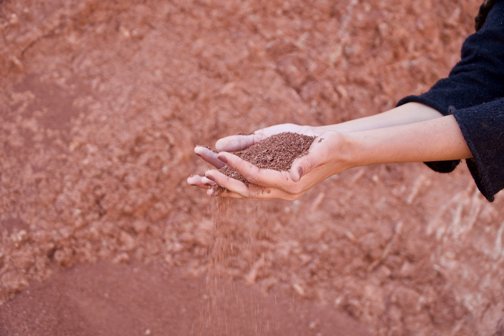
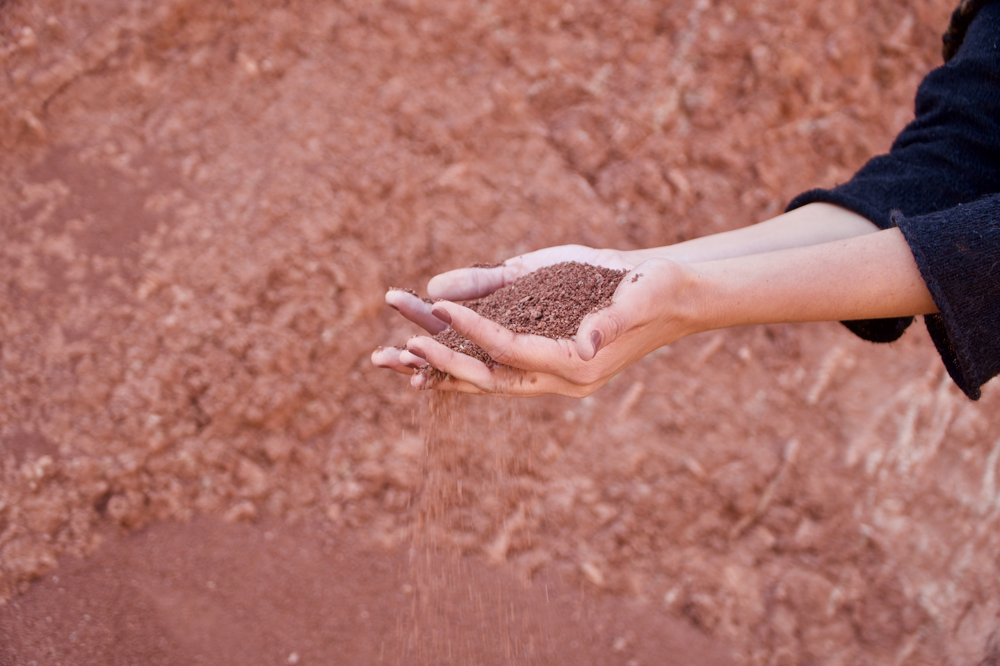
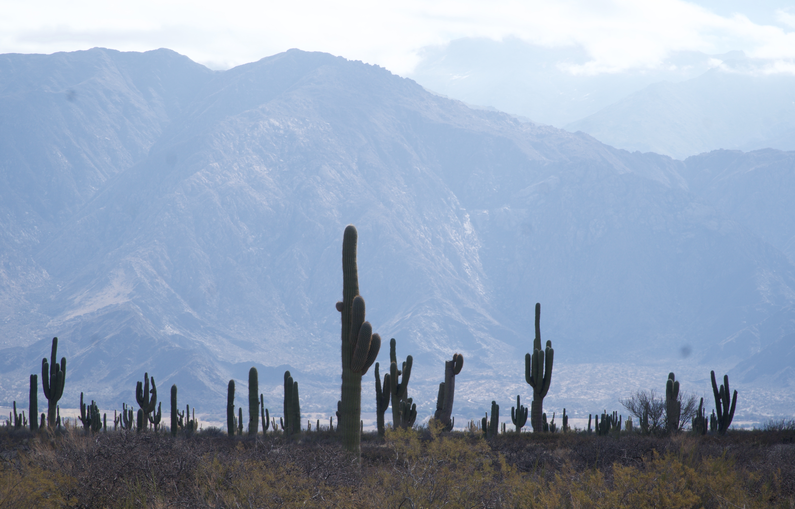
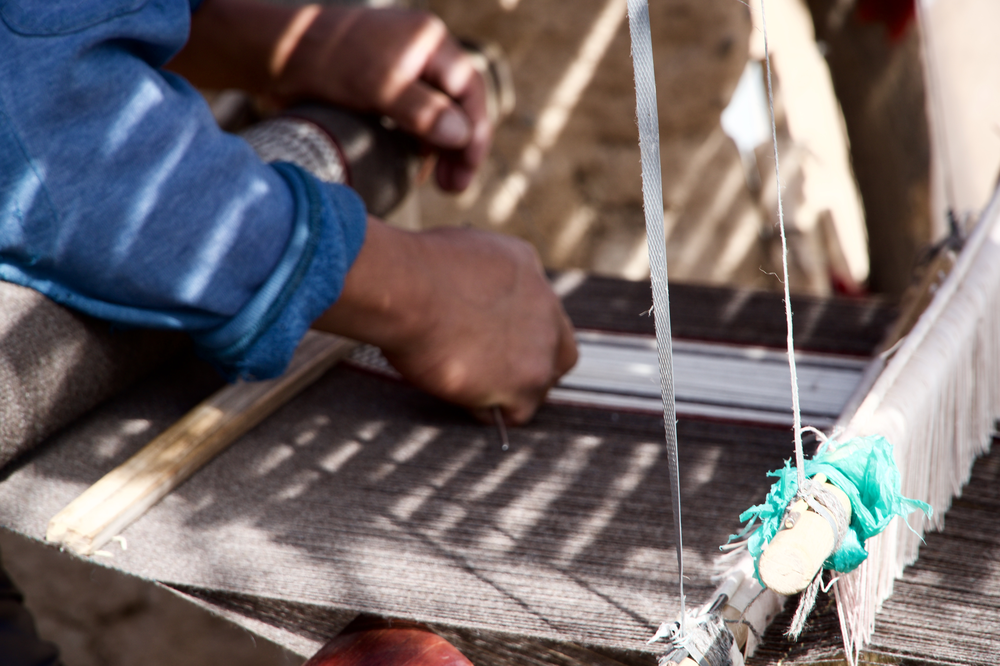
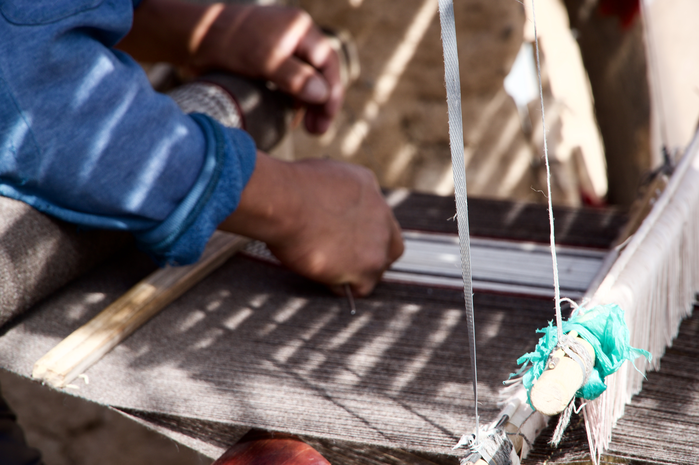

The beauty of the interior of the province
Not only the capital of the city has its charm.
A trip through the interior is something you cannot miss.
"La ruta del vino de cafayate, la cuesta del obispo, la quebrada de las flechas"
 


The landscapes? the best you can find

know and connect with artisanal work
It is an opportunity for you to learn first-hand about the great craftsmanship of our country, especially fot the interior. You can find fairs, shops, or even artisans on the route.
 
